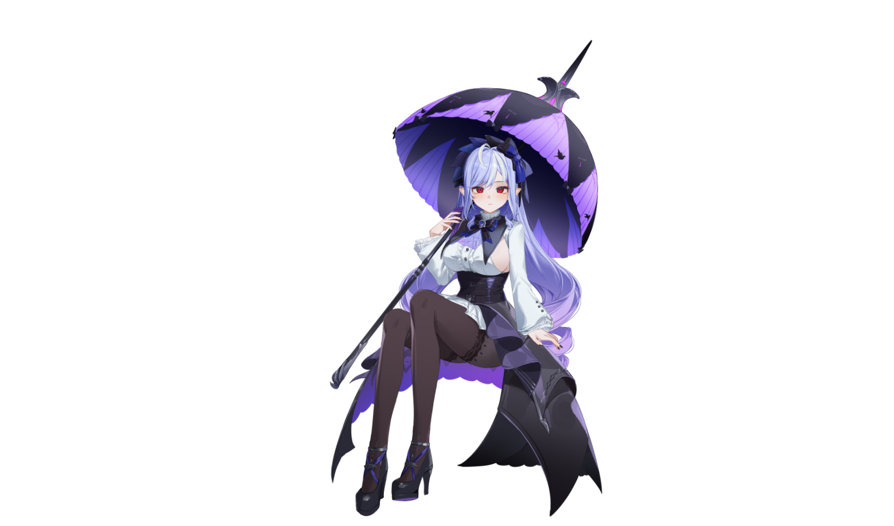
3D VTuber Model
Twilight Umbrella
↗
Graphic Designer • VTuber & Character Artist
Harry Studio creates polished character concepts, VTuber visuals, model showcases, design sheets, and premium presentation art for creators who want their work to look professional from the first impression.

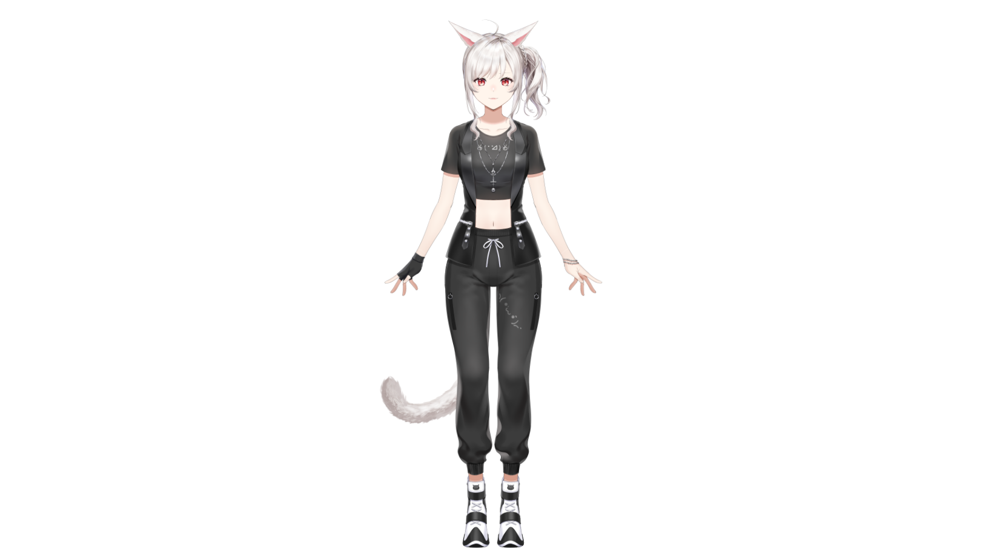
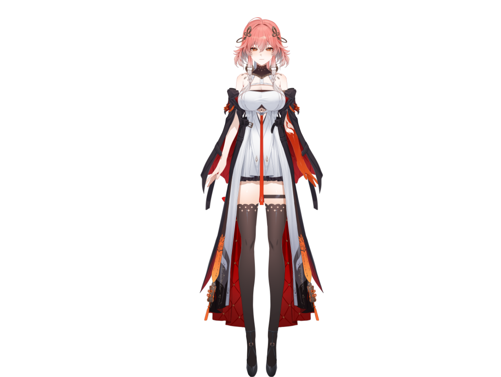
About Me
I’m Haris Shahid, the designer behind Harry Studio, focused on anime-style character art, VTuber model presentation, and premium visual storytelling. My work blends strong composition, appealing color palettes, and clean presentation so clients can immediately understand the value of the project.
Original concepts, costume design, palette direction, and polished final art.
3D/2D model presentations, promotional images, and showcase-ready designs.
Turnaround boards, detail callouts, palettes, and elegant portfolio presentations.
High-impact banners, listings, key visuals, and presentation layouts for creative work.
Client-Facing Portfolio
Each project is displayed with a clean category label, clear visual hierarchy, and a case-study style presentation. This makes the website feel like a real professional portfolio instead of a simple image gallery.
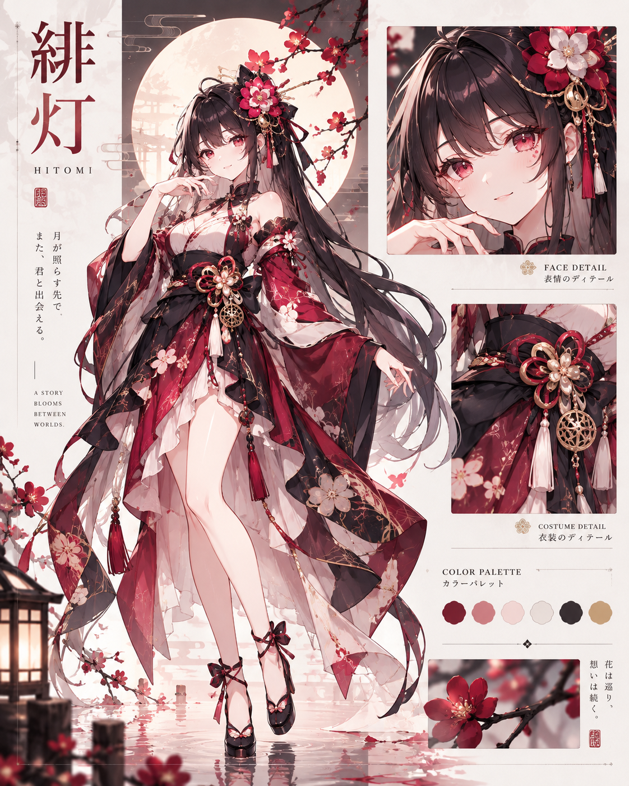
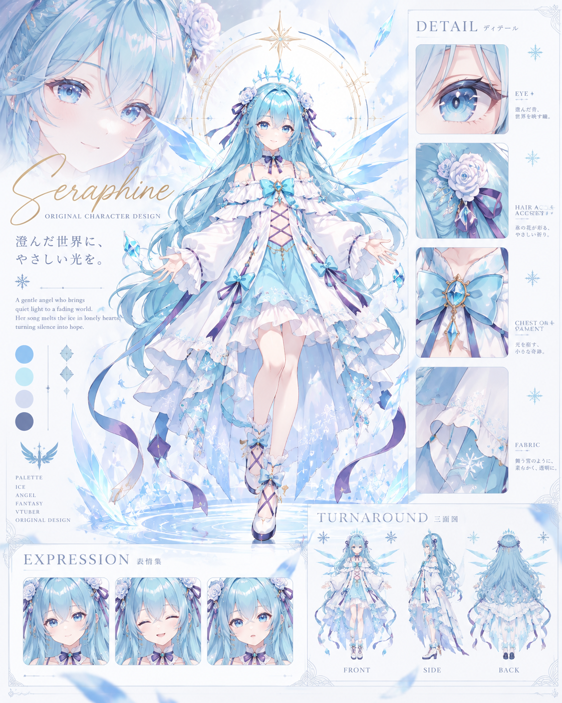
Selected Projects
Elegant seated VTuber-style character with a dramatic violet umbrella, fashion-forward silhouette, and clean studio presentation.
Minimalist modern cat-girl model with monochrome styling and a soft fashion-doll finish, suitable for avatar and VTuber presentations.
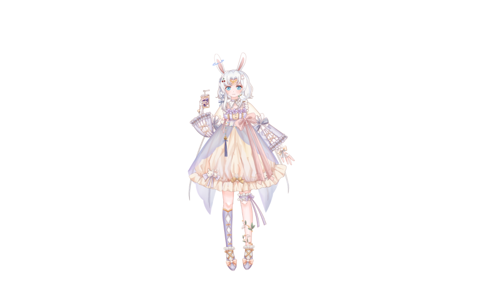
Cute pastel fantasy character with rabbit ears, playful accessories, and a soft confectionery-inspired palette.
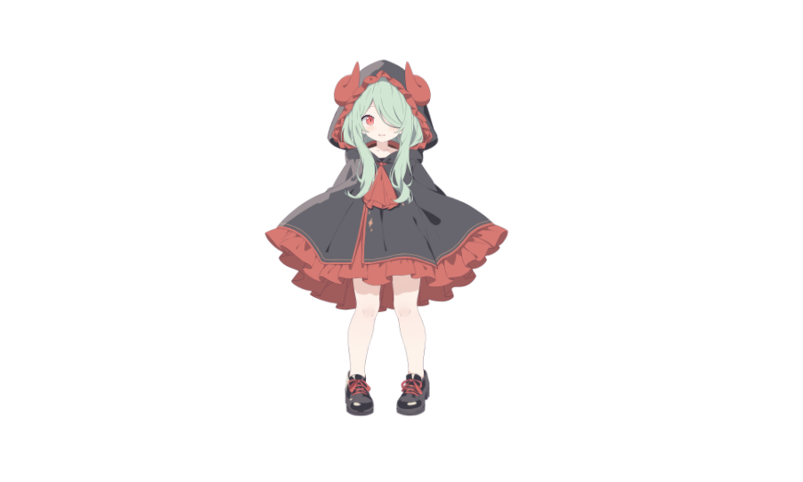
Compact chibi mascot design with demon-horn hood details and bold red-black contrast for a memorable, marketable look.
Stylized full-body model featuring elegant red, black, and ivory costume layers with a strong fantasy VTuber identity.
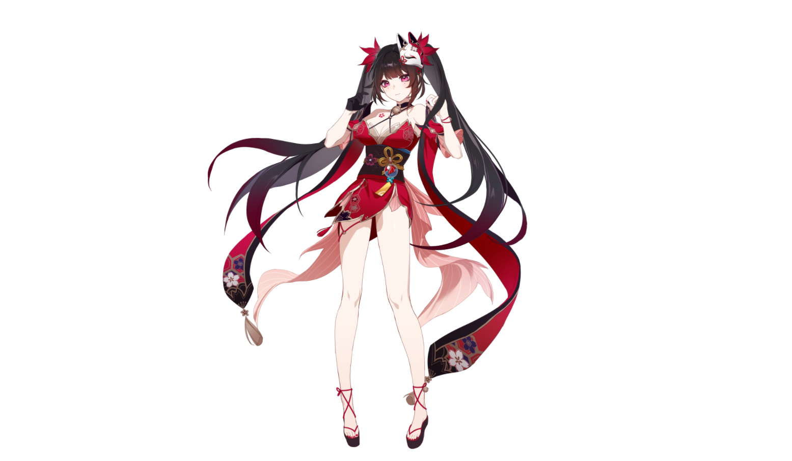
Dramatic red-and-black anime heroine artwork with floral motifs and rich lighting, designed as a premium character feature visual.
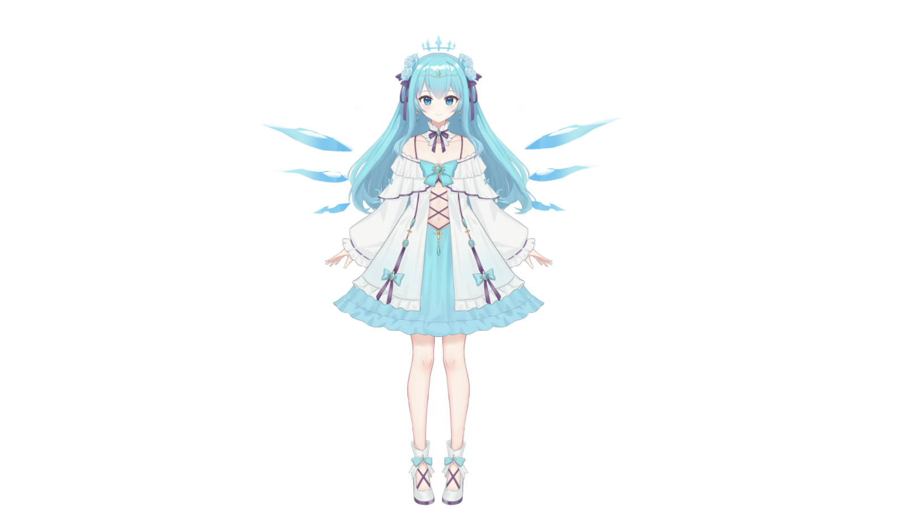
Soft ice-blue angelic VTuber concept with elegant dress styling and ethereal wing-like visual accents.
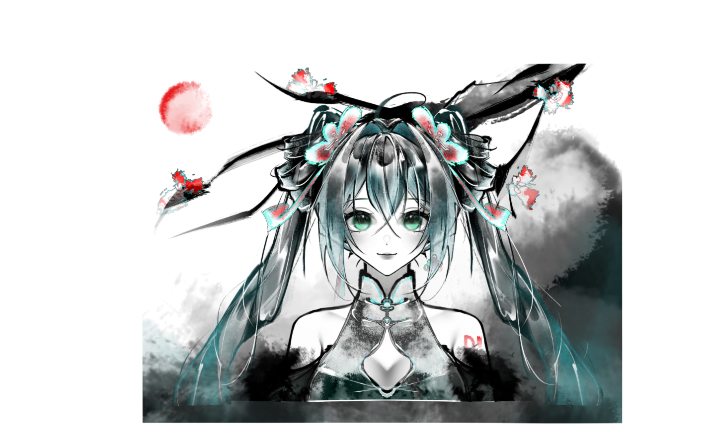
Painterly monochrome-and-accent portrait influenced by ink wash textures, floral details, and atmospheric storytelling.
High-end design sheet featuring costume details, face close-up, and curated palette presentation for a premium fantasy heroine.
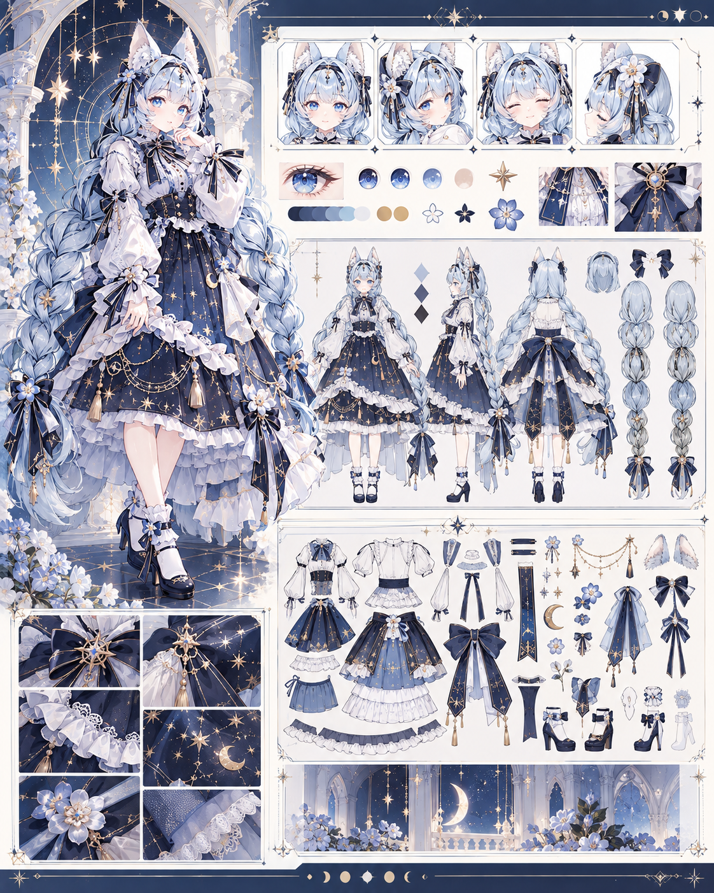
Clean celestial-lolita presentation with turnaround views, accessory breakdowns, expression details, and outfit close-ups.
Elegant icy project board combining hero art, detail callouts, expressions, and turnaround views in a polished premium layout.
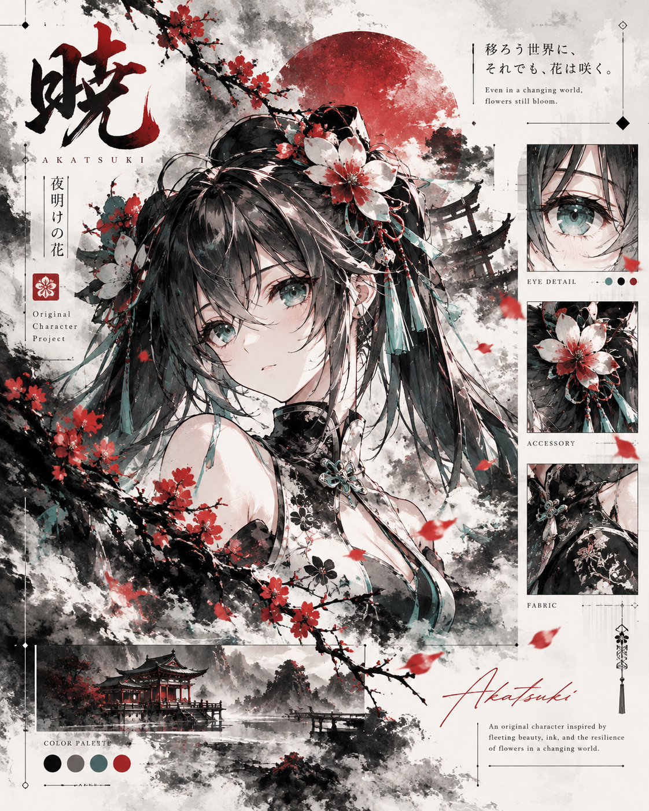
Bold ink-inspired concept poster with Japanese-inspired motifs, floral accents, editorial typography, and moody composition.
How I Work
I gather style preferences, references, and intended use so the concept fits the client’s goals.
I build a strong visual direction through character styling, palette choices, and composition planning.
Final art is refined and arranged into clean, professional visuals that showcase the project properly.
Clients receive organized final files ready for portfolio use, listing use, or presentation purposes.
Let’s Work Together
Use this website as your client-facing portfolio, then replace the placeholder contact links below with your real Fiverr, email, Instagram, or Discord details.